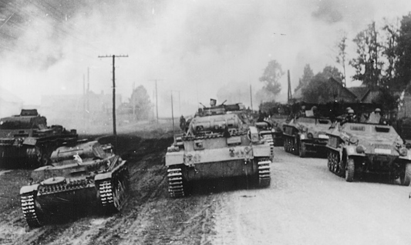
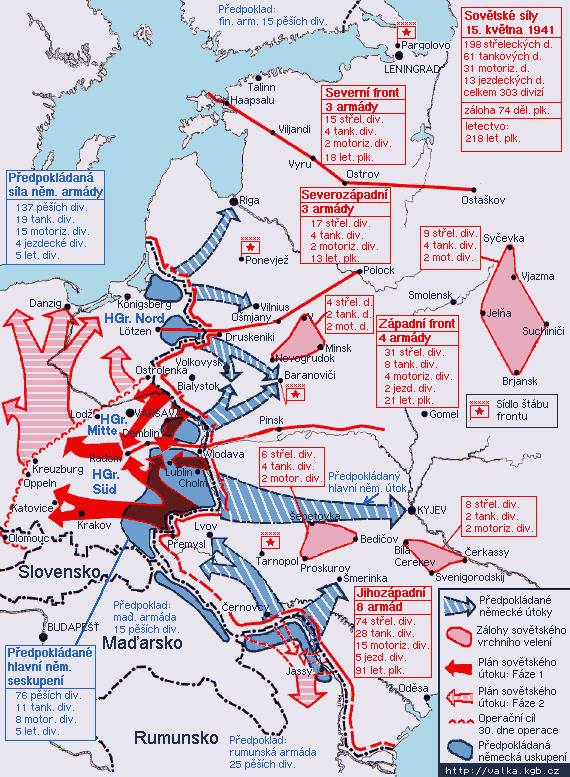
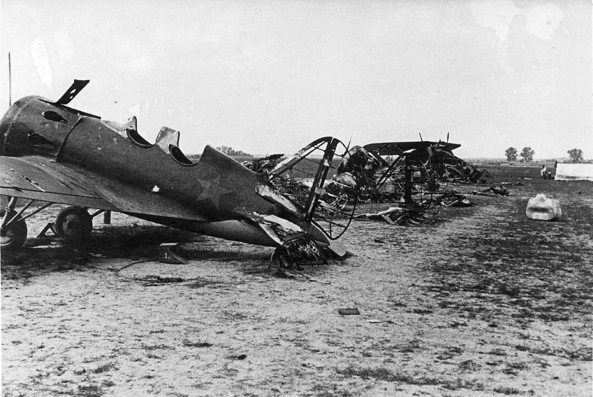
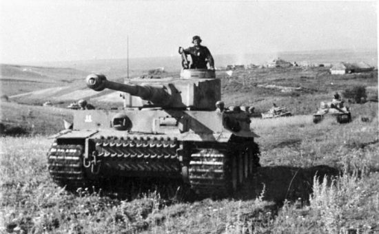
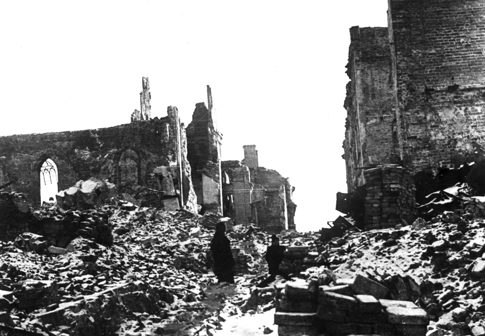
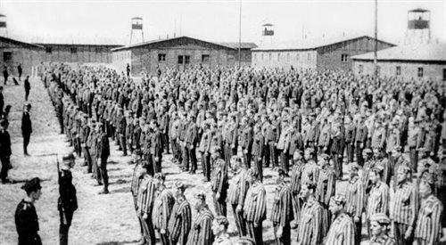
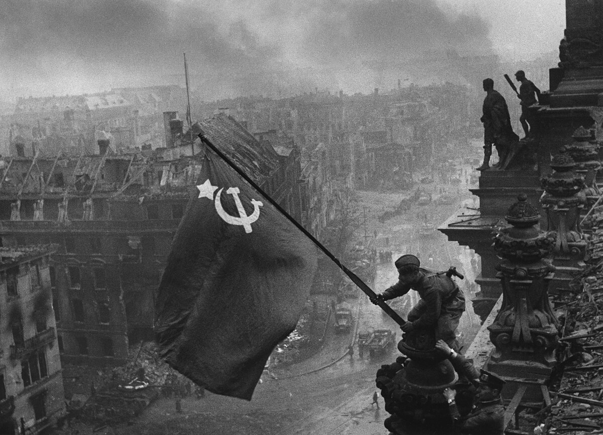

Wojna na froncie wschodnim
Wprowadzenie
Wojna na froncie wschodnim była jednym z najkrwawszych i najważniejszych teatrów działań II wojny światowej. Rozpoczęła się 22 czerwca 1941 roku operacją „Barbarossa”, czyli niespodziewanym atakiem Niemiec na Związek Radziecki. Konflikt ten rozciągał się na olbrzymim obszarze, od Bałtyku po Morze Czarne, i zakończył się klęską III Rzeszy w maju 1945 roku. Front wschodni był areną wielkich bitew, ogromnych strat ludności cywilnej i przełomowych wydarzeń, które zadecydowały o losach wojny.
Operacja „Barbarossa”
22 czerwca 1941 roku Adolf Hitler rozpoczął realizację planu inwazji na ZSRR, łamiąc pakt Ribbentrop–Mołotow. Celem operacji „Barbarossa” było błyskawiczne pokonanie Związku Radzieckiego. Atak prowadzony był na trzech głównych kierunkach:
1. Północnym - w stronę Leningradu.
2. Środkowym - z celem zdobycia Moskwy.
3. Południowym – przez Ukrainę i Krym w kierunku Kaukazu.
 Bitwy przełomowe
Wojna na froncie wschodnim była pełna decydujących starć, które zmieniały losy konfliktu:
- Bitwa pod Moskwą (1941–1942): Pierwsza poważna porażka Niemiec, która pokazała, że ich armia nie jest niepokonana.
- Bitwa o Stalingrad (1942–1943): Punkt zwrotny wojny. Klęska Wehrmachtu i utrata całej 6. Armii była początkiem strategicznej ofensywy ZSRR.
- Bitwa na Łuku Kurskim (1943): Największa bitwa pancerna w historii, zakończona zwycięstwem Armii Czerwonej i początkiem niemieckiego odwrotu.
Eksterminacja i zniszczenia
Front wschodni był także miejscem niewyobrażalnych cierpień ludności cywilnej. Niemcy stosowali politykę „spalonej ziemi”, eksterminowali całe wsie i prowadzili masowe egzekucje. Na zajętych terenach powstały liczne obozy koncentracyjne i obozy pracy. Z kolei Armia Czerwona, w trakcie swojego marszu na zachód, dopuszczała się aktów odwetu, które dotykały także cywilów na terenach zajmowanych przez Niemców.
 Marsz na Berlin i zakończenie wojny
Od 1943 roku Armia Czerwona rozpoczęła systematyczną ofensywę, która zakończyła się zdobyciem Berlina w maju 1945 roku. Operacja „Bagration” z 1944 roku, w której Armia Czerwona rozbiła niemiecką Grupę Armii „Środek”, była jednym z najważniejszych działań wojennych, które otworzyły drogę do wyzwolenia Europy Wschodniej.
Pamięć i dziedzictwo
Wojna na froncie wschodnim pozostawiła trwały ślad w pamięci historycznej narodów. Była symbolem heroizmu, ale także tragedii na masową skalę. Straty ludzkie i materialne na wschodzie Europy były niewyobrażalne, a wydarzenia tego konfliktu stały się przedmiotem licznych badań i refleksji nad kosztami wojny.